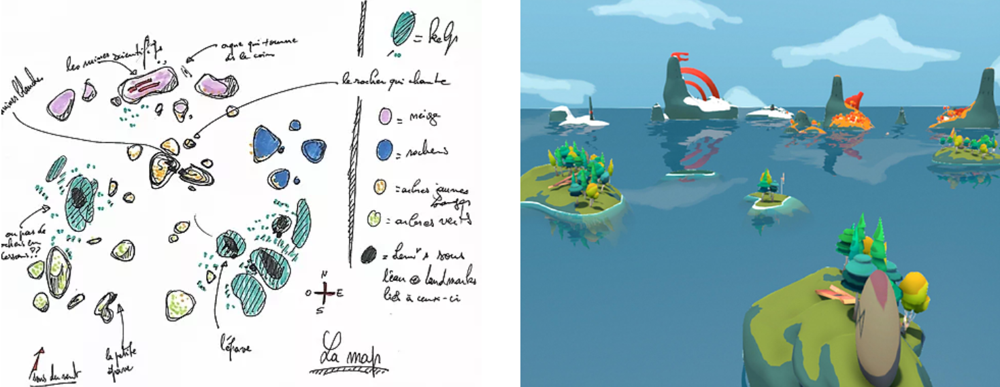

University Projects
Here is a small compilation of games I worked on while going at University.
Lagu
Game Description
The player is a ship captain in a whole new world. His objective is to discover its secrets and compile them in his journal. He will, therefore, have to draw on a map and keep notes about each island he finds until he has explored the four corners of the world.
The player is accompanied by an AI from this lost civilization who can see and understand the drawings and pictures in the captain diary, which it completes with a short procedurally generated story about the island that the player has just explored.
My responsiblities and missions
- Designed and programmed the boat gameplay: implemented the sounds, animations and worked on the boat movements.
- Designed and programmed the camera behaviors. We wanted a camera that allowed the player to inspect elements but that would also constrain him so that he moves around to truly explore the islands.
- Designed and programmed the water behavior. Created my own water shader for this game to have elements that the player could only see when he approached the location.
- Level designed the layout and implemented it in Unity. In this world, we have 5 unique environments that have their own stories and events to discover. 